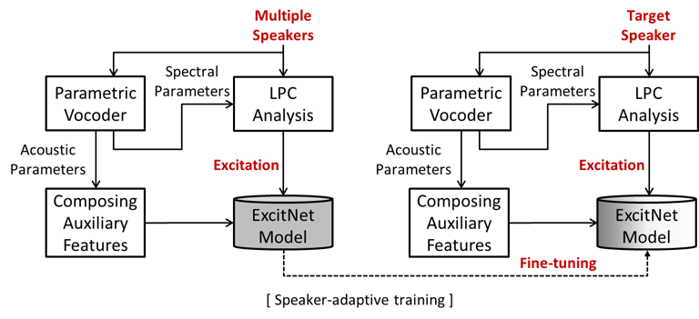

Authors:
Eunwoo Song, Jinseob Kim, Kyungguen Byun, Hong-Goo Kang
Date: 28 Jun 2019 (last updated 17 Mar 2020)
- Abstract
This paper proposes speaker-adaptive neural vocoders for text-to-speech (TTS) systems.
Recently proposed WaveNet-based neural vocoding systems successfully generate a time sequence of speech signal with an autoregressive framework.
However, it remains a challenge to build high-quality speech synthesis systems when the amount of a target speaker's training data is insufficient.
To generate more natural speech signals with the constraint of limited training data, we propose a speaker adaptation task with an effective variation of neural vocoding models.
In the proposed method, a speaker-independent training method is applied to capture universal attributes embedded in multiple speakers, and the trained model is then optimized to represent the specific characteristics of the target speaker.
Experimental results verify that the proposed TTS systems with speaker-adaptive neural vocoders outperform those with traditional source-filter model-based vocoders and those with WaveNet vocoders, trained either speaker-dependently or speaker-independently.
In particular, our TTS system achieves 3.80 and 3.77 MOS for the Korean male and Korean female speakers, respectively, even though we use only ten minutes' speech corpus for training the model.
